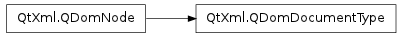

QDomDocumentType ¶

Synopsis ¶
Detailed Description ¶
The PySide.QtXml.QDomDocumentType class is the representation of the DTD in the document tree.
The PySide.QtXml.QDomDocumentType class allows read-only access to some of the data structures in the DTD: it can return a map of all PySide.QtXml.QDomDocumentType.entities() and PySide.QtXml.QDomDocumentType.notations() . In addition the function PySide.QtXml.QDomDocumentType.name() returns the name of the document type as specified in the <!DOCTYPE name> tag. This class also provides the PySide.QtXml.QDomDocumentType.publicId() , PySide.QtXml.QDomDocumentType.systemId() and PySide.QtXml.QDomDocumentType.internalSubset() functions.
See also
- class PySide.QtXml. QDomDocumentType ¶
- class PySide.QtXml. QDomDocumentType ( x )
-
Parameters: x – PySide.QtXml.QDomDocumentType Creates an empty PySide.QtXml.QDomDocumentType object.
Constructs a copy of n .
The data of the copy is shared (shallow copy): modifying one node will also change the other. If you want to make a deep copy, use PySide.QtXml.QDomNode.cloneNode() .
- PySide.QtXml.QDomDocumentType. entities ( ) ¶
-
Return type: PySide.QtXml.QDomNamedNodeMap Returns a map of all entities described in the DTD.
- PySide.QtXml.QDomDocumentType. internalSubset ( ) ¶
-
Return type: unicode Returns the internal subset of the document type or an empty string if there is no internal subset.
- PySide.QtXml.QDomDocumentType. name ( ) ¶
-
Return type: unicode Returns the name of the document type as specified in the <!DOCTYPE name> tag.
See also
- PySide.QtXml.QDomDocumentType. notations ( ) ¶
-
Return type: PySide.QtXml.QDomNamedNodeMap Returns a map of all notations described in the DTD.
- PySide.QtXml.QDomDocumentType. publicId ( ) ¶
-
Return type: unicode Returns the public identifier of the external DTD subset or an empty string if there is no public identifier.
- PySide.QtXml.QDomDocumentType. systemId ( ) ¶
-
Return type: unicode Returns the system identifier of the external DTD subset or an empty string if there is no system identifier.